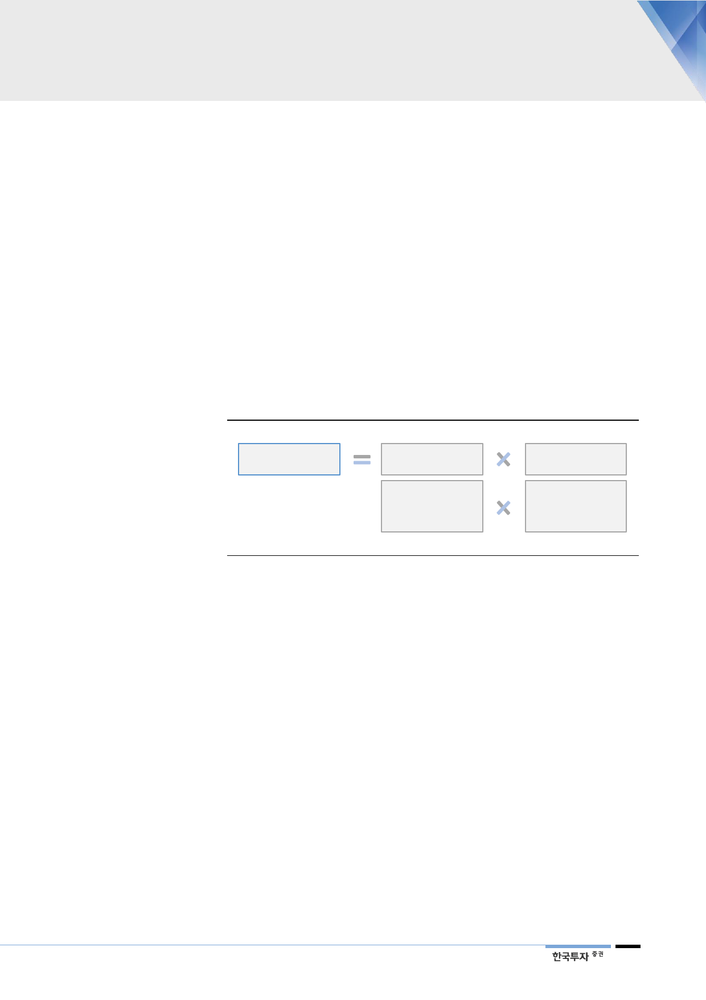

요금기저와 투자보수율로
투자보수가 결정
천연가스 수요 따라
설비투자 늘어나면
요금기저 역시 증가
베타, 자기자본비율이
투자보수율 상승 뒷받침
II. 국내 투자보수 증가하는 국면
1. 요금기저와 투자보수율 모두 개선
가스공사는 우리나라에서 천연가스를 독점적으로 수입해 도시가스용과 발전용으
로 판매하고 있다. 정부와 협의해 가동 설비에 대한 적정이익을 보장받을 수 있어
수익구조가 안정적이다. 2개월마다 연료비가 3% 이상 변동할 경우 비용증가분은
요금 인상을 통해 적정원가에 반영된다. 이러한 연료비 연동제 덕분에 판매량과
판매가격의 변화는 가스공사의 손익에 영향을 미치지 않는다. 실질적으로 얻는
보장이익은 요금기저에 투자보수율을 곱해 정해진다. 요금기저는 가스공사가 도
매사업을 하기 위해 투자한 자산으로 순가동설비(저장탱크, 배관), 무형고정자산,
투자자산 그리고 운전자금으로 구성된다. 투자보수율은 주주나 채권자가 제공한
자금에 대한 보상률 개념으로 가중평균자본비용(WACC)에 해당한다.
[그림 5] 가스공사의 적정투자보수는 요금기저와 투자보수율의 곱
적정투자보수
요금기저(Rate-base)
순가동설비 자산액
순무형고정 자산액
+운전자금
투자보수율
WACC=자기자본보수율과
타인자본보수율을
자본구성비로 가중평균
자료: 한국가스공사, 한국투자증권
올해 4월 확정된 ‘제13차 장기 천연가스수급계획’에 따라 우리나라 천연가스 수
요 전망은 상향조정됐다. 정부는 이미 진행중인 기저발전에 대한 투자가 일단락
되는 2025년부터 발전용 천연가스 수요가 2031년까지 매년 4.1%씩 늘어날 것
으로 전망하고 있다. 2년 전 12차 계획에서 연평균 2.3% 줄어들 것으로 예상했
던 것에 비해 천연가스를 바라보는 방향이 바뀐 것이다. 이에 맞춰 정부는 2031
년까지 천연가스 설비투자에 5.8조원을 투입할 계획이다. 가스공사의 가동설비
역시 다시 증가하며 요금기저는 꾸준히 늘어날 전망이다.
여기에 투자보수율도 상승할 것이다. 자기자본보수율 산정에 적용되는 가스공사
의 베타 역시 2015년 이후 매년 높아지고 있다. 과거 5년 동안의 일평균 베타를
적용하는 만큼 2020년까지 우상향 추세가 이어질 것이다. 또한 이익이 늘어날수
록 자기자본비율은 높아져 WACC도 함께 상승하는 구조다.
5